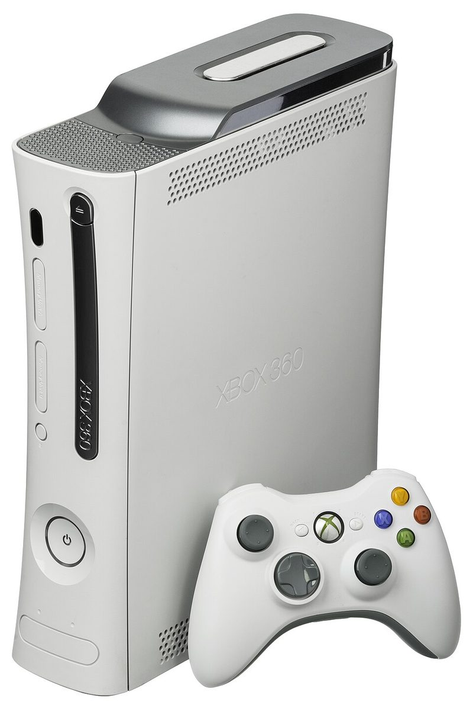
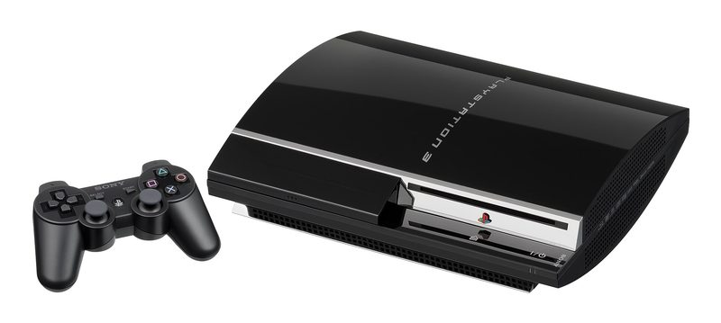
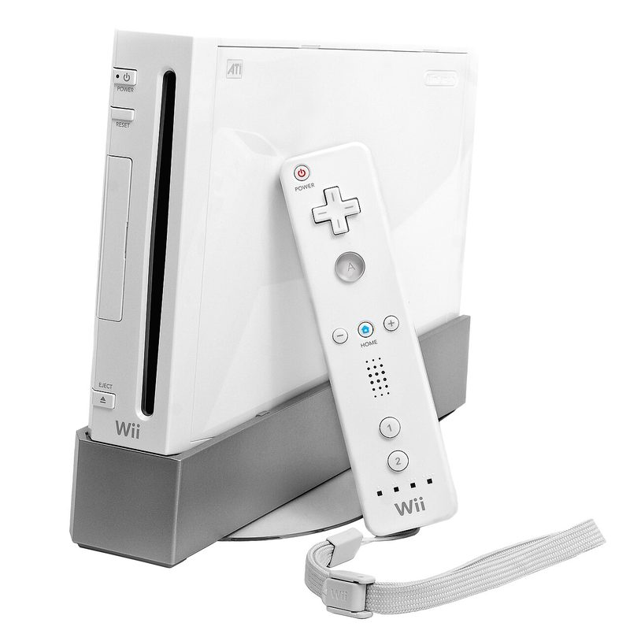
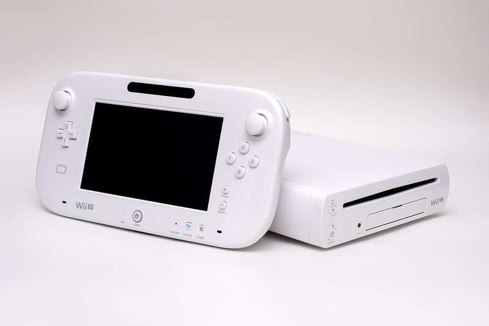
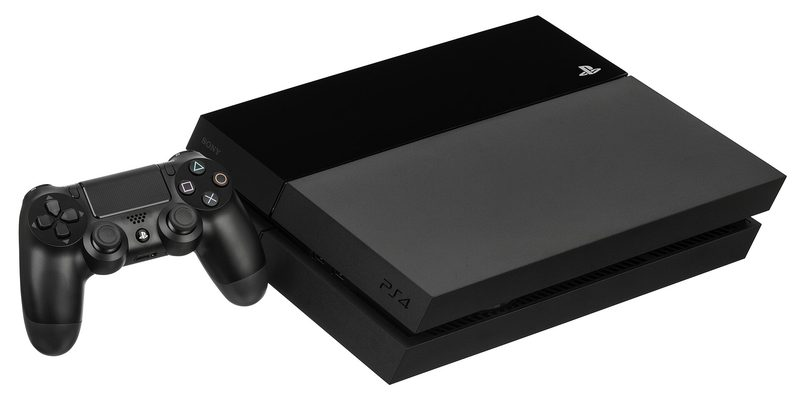
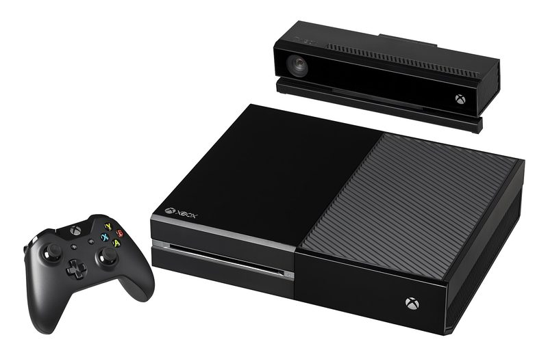

The HD & Online Era (2005–2020)
As flat-screen HD TVs became common, consoles started to output sharper, high-definition graphics. Online play, digital game stores, and downloadable updates became normal parts of console gaming, and Nintendo went in a different direction with motion controls.

Xbox 360
Released: 2005 | Maker: Microsoft
The Xbox 360 launched a full year before its competitors. It made online play the center of the experience with an improved Xbox Live and introduced achievements, rewards for completing challenges in games. In 2010, Microsoft added Kinect, a camera that let players control games with their bodies.

PlayStation 3
Released: 2006 | Maker: Sony
The PS3 included a Blu-ray player and a free online service, the PlayStation Network. Its high launch price slowed early sales, but games like Uncharted 2 and The Last of Us later helped it catch up.

Wii
Released: 2006 | Maker: Nintendo
Instead of chasing better graphics, Nintendo focused on motion controls. The Wii Remote let players swing, point, and bowl, and Wii Sports brought in people who had never played video games before. The Wii sold about 102 million units.

Wii U
Released: 2012 | Maker: Nintendo
The Wii U's controller had its own touch screen, so players could keep playing even when someone else was using the TV. Many shoppers were confused about whether it was a new console or an accessory for the Wii, and it sold only about 13.5 million units.

PlayStation 4
Released: 2013 | Maker: Sony
Sony designed the PS4 to be easy for developers to make games for, and it launched at a lower price than the Xbox One. A Share button on the controller let players post screenshots and videos online instantly. The PS4 became one of Sony's most successful consoles.

Xbox One
Released: 2013 | Maker: Microsoft
The Xbox One was designed as an all-in-one entertainment system that could also control live TV. Early plans that would have restricted used games were dropped after fan complaints, and Microsoft later made many older Xbox games playable on it through backward compatibility.
Console photos from Wikimedia Commons.
Next stop: Today's Consoles.